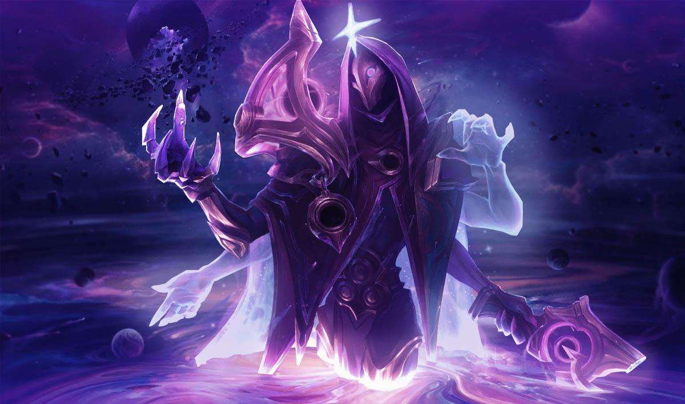

Jhin, O Virtudo
Conheça Jhin
Jhin é um meticuloso psicopata criminoso que acredita que o assassinato é uma arte. Outrora um prisioneiro ioniano, mas libertado por membros obscuros do conselho regimental de Ionia, o assassino serial agora trabalha como assassino de seu conluio. Usando a própria arma como pincel, Jhin cria obras artisticamente brutais, horrorizando vítimas e espectadores. Ele sente um cruel prazer ao fazer suas encenações nefastas, tornando-o a escolha ideal para transmitir a mais poderosa das mensagens: o terror.
HABILIDADES
- PASSIVA - SUSSURO
Sussurro, o canhão de mão de Jhin, é um instrumento preciso que foi projetado para causar muito dano. Ele dispara com frequência fixa e carrega apenas quatro projéteis. Jhin encanta o projétil final com magia sombria para causar Acerto Crítico e dano de execução adicional. Sempre que causa um Acerto Crítico, Sussurro inspira Jhin com um impulso de Velocidade de Movimento.
- Q - GRANADA DANÇANTE
Jhin lança um cartucho mágico em um inimigo. Ele pode atingir até quatro alvos e acumula dano a cada vez que causa um abate.
- W - FLORESCER MORTAL
Jhin brande sua bengala, fazendo um disparo único com incrível alcance. Ele atravessa tropas e monstros, mas para no primeiro Campeão atingido. Se o alvo foi recentemente atingido por aliados de Jhin, por Armadilhas de Lótus ou recebeu dano de Jhin, ele será enraizado.
- E - AUDIÊNCIA CATIVA
Jhin posiciona uma armadilha de lótus invisível que floresce ao ser pisada. Ela reduz a velocidade de inimigos próximos antes de causar dano com uma explosão de pétalas serrilhadas. Beleza em Morte - Quando Jhin abate um Campeão inimigo, uma armadilha de lótus florescerá próximo a seu cadáver.
- R (ULTIMATE) - ACLAMAÇÃO
Jhin canaliza, transformando a Sussurro em um mega-canhão de ombro. Ela é capaz de fazer 4 super disparos com extremo alcance que atravessam tropas e monstros, mas que param no primeiro campeão atingido. A Sussurro mutila os inimigos atingidos, o que reduz sua velocidade e aumenta o dano de execução. O 4º disparo é feito com perfeição, de poder épico e garante um acerto crítico.